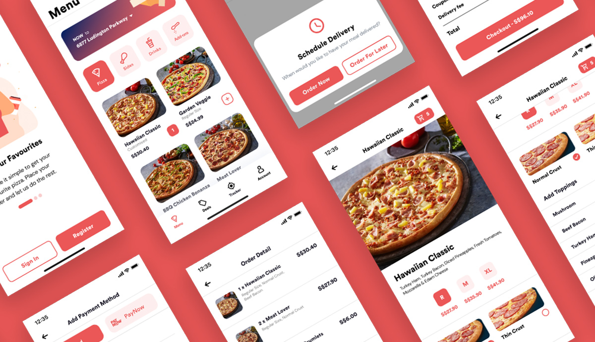
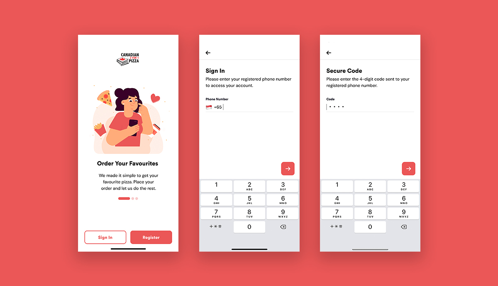
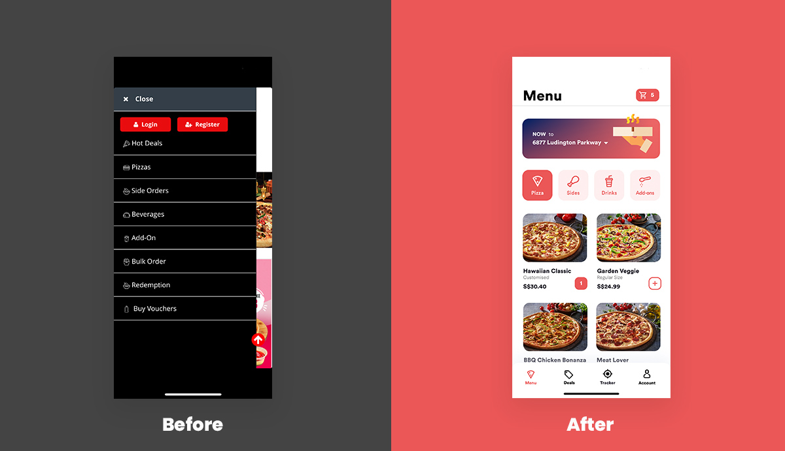
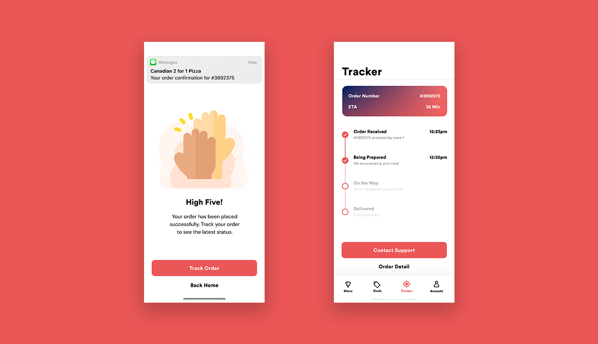
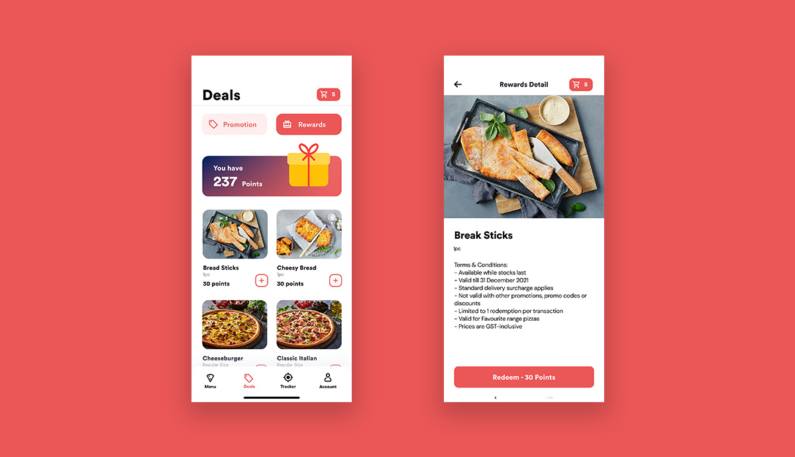

Pizza Delivery App
Introduction
Challenge: The original Canadian 241 Pizza Singapore app had a confusing user flow, with a lengthy registration form and an unorganised menu. A key challenge was to address these pain points while preserving core functionalities and reflecting the brand's identity.
Solution: The redesign focused on simplifying core interactions and creating a more intuitive user experience. My approach was to streamline the sign-up and navigation processes, and provide clearer feedback throughout the user's journey.
Process
Competitor Analysis: Pizza Hut Singapore, Sarpino’s Pizza Singapore, ThePizzaCompany 1112
Data Gathering: user feedback analysis, online survey, think-aloud observation
Establishing Requirements: personas, scenarios, use cases
Prototyping: low-fi prototype, hi-fi prototype
Evaluation: Heuristic evaluation, cognitive walkthrough
Colour Palette
The colour palette is generated based on Canadian 241 Pizza Singapore logo.
#EB5757
#FFEDED
#181725
#7C7C7C
The Design
Registration
Reduced the 9 compulsory fields on the registration form to 3 fields (mobile number, name, and email). This simplified the sign-up process, aiming to increase new member conversions and reduce user drop-off.

Sign In
Designed a passwordless sign-in process using a one-time password (OTP). This eliminates the need for users to remember a password, streamlining access and reducing potential friction.
Menu
The original app had an unorganised menu and confusing icons. I redesigned the menu with intuitive, tab-based navigation on the home screen, making it easier for users to quickly find and select food items.
Tracker
To address user anxiety and frequent calls, I introduced a real-time order tracker. This feature keeps customers updated on their order status, providing transparency and improving the overall post-purchase experience.
Gamification
Added a point-based reward system to encourage repeat purchases and improve user engagement by giving customers a clear incentive to earn and redeem points.
